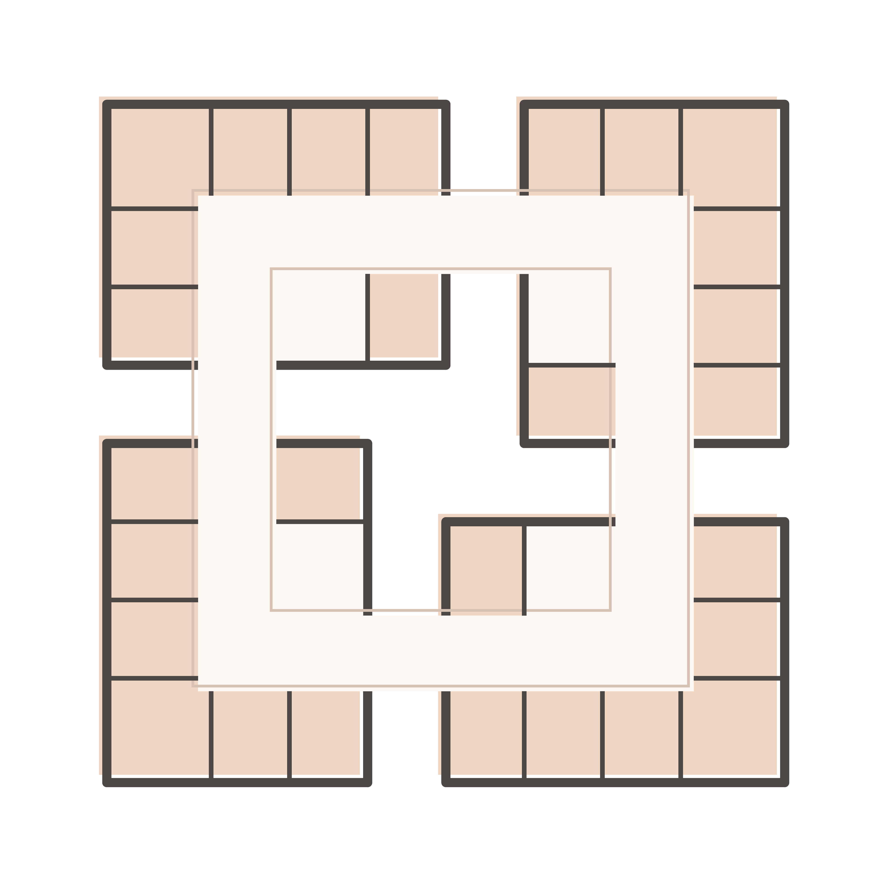
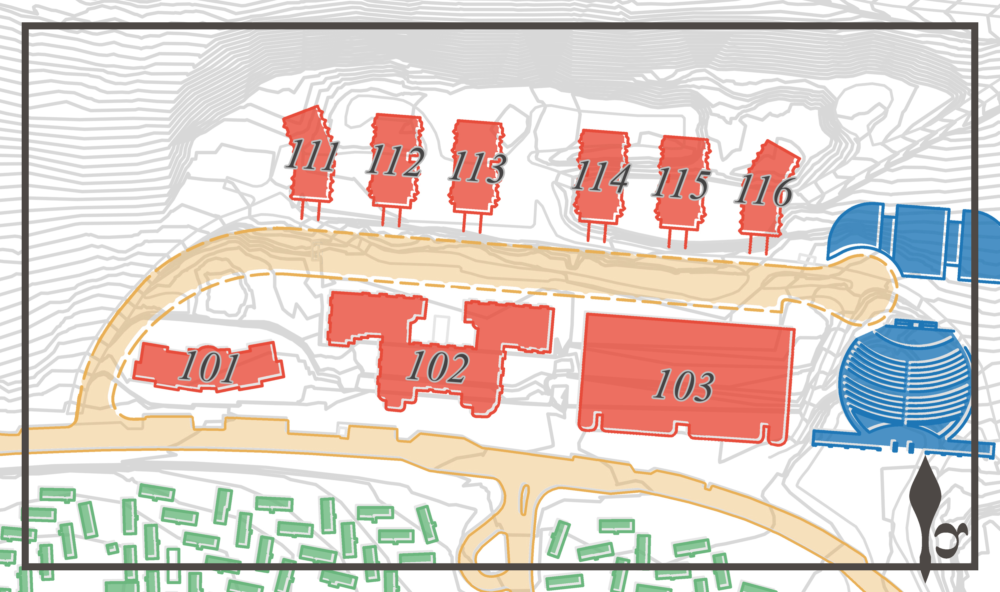
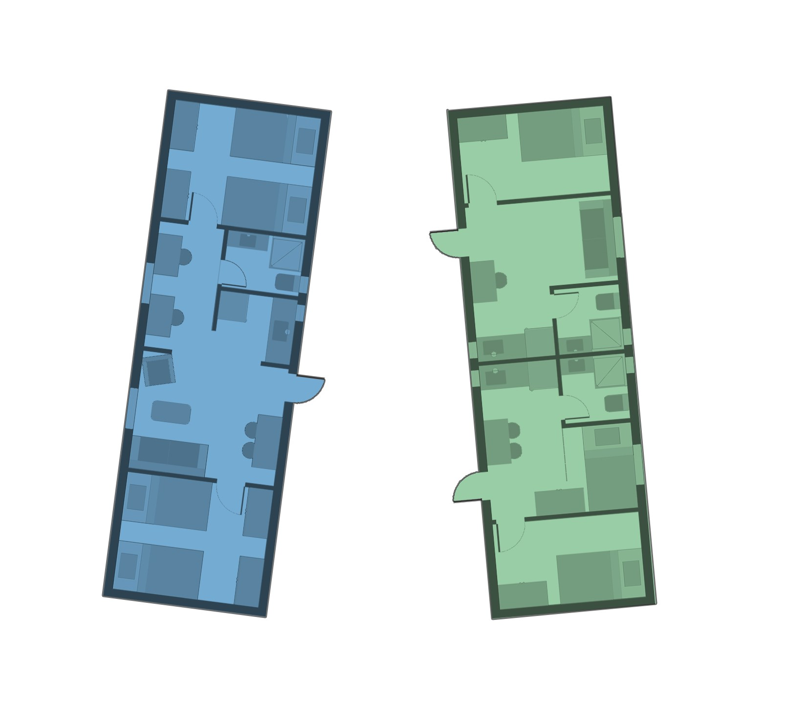
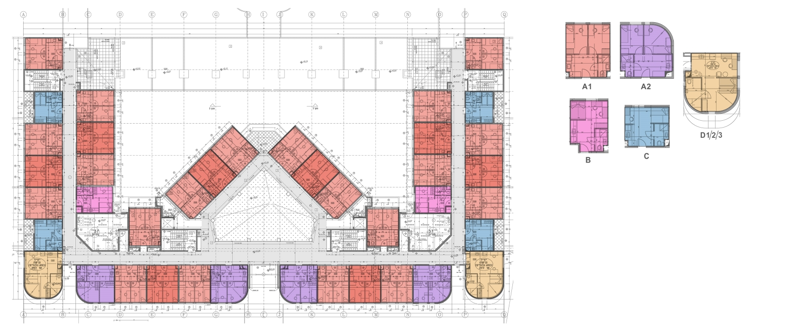

Select a project
to explore.
Research, design, and industry work — all connected by a single thread: using empirical methods to understand how space shapes human behaviour.
Academic Seminar Paper · Ariel University, 2022
Quantitative Spatial Data Analysis:
Student Dorms Archetype


Architectural theory frequently claims that physical environments shape human communities, yet these assertions often rely on subjective intuition rather than empirical, verifiable validation. This research seminar transitions architectural design into the realm of quantitative science. Under the supervision of Dr. Arch Gilad Schweid, this study establishes a rigorous empirical methodology to analyze, measure, and map exactly how micro-architectural and environmental features drive or restrict a psychological "Sense of Community" (SoC) within institutional student housing.
The core of the research evaluated a comparative dataset between two polarized housing archetypes at Ariel University: a structured Mid-rise Compound of a cluster/corridor hybrid archetype versus a decentralized Caravan Compound of the scattered plex archetype.

Corridor Plex archetype

Cluster Plex archetype

Scattered Plex archetype





To orchestrate remote data collection during the pandemic, I designed and co-developed a custom native Android mobile application ("פרויקט נקודות - מעונות אריאל"). The app functioned as a live research platform, capturing standardised psychometric metrics (calibrated Hebrew translations of the SCI-2 and URES environmental scales) alongside passive background geospatial telemetry.
Privacy-by-Design governed the data pipeline: survey responses were isolated from spatial location metrics across decoupled database tables. User identities were obfuscated at device edge using a client-side cryptographic hash function (crossing device hardware IDs with registration timestamps) generating a unique anonymous join-index token. Telemetry points were streamed to the server only if the participant was within the city limits. Hyper-Local data masking was used by the app to ignore a student's precise coordinate when he/she was inside their immediate residential cluster and log a default centralized anchor pointing to the middle of the cluster instead.
Counter to conventional density-driven assumptions, the mixed-method analysis revealed a clear statistical advantage for the decentralised Caravan Compound over the structured Mid-rise Compound in driving Sense of Community. Micro-spatial elements — specifically nature integration, visual appeal, and spatial buffer features — proved to be high-impact drivers of interpersonal trust, outperforming rigid structural density.
The study is intentionally architected as a modular methodology framework. Because universities maintain total institutional control over students' physical boundaries, student housing represents the ultimate live testing sandbox for continuous spatial experimentation — running predictive modelling to discover optimal dormitory structures and deploying incremental spatial feature updates to systematically optimise human well-being and community resilience.
B.Arch. Final Project · Academic Thesis & Design Lab
NKDT — Architecture as a
Dynamic System

Traditional residential architecture treats institutional housing as a static, unyielding container — failing to adapt to the fluid needs of its users or address the growing crisis of urban loneliness. NKDT (פרויקט נקודות — "Project Points") reimagines student housing not as a fixed building, but as a live, data-rich architectural laboratory and responsive system. The central question it asks: should architecture not continue to help us find our place and way in an ever more disorienting world?
The project operates on three simultaneous scales — the architectural design laboratory (a dynamic system capable of receiving spatial modifications), the community laboratory (a social environment that reinforces communal bonds against loneliness), and the student dorms (a platform of temporary residents who are unwitting participants in the institutional experiment).
The project is positioned within a studied taxonomy of three dominant dorm archetypes — from the inward-facing cluster plex, to the corridor hybrid, to the decentralised scattered plex. Each typology generates a distinct social ecology, and each is embedded as one of the three testable building types within the NKDT precinct.
Urban character · enclosed courtyard · inward social focus · public ground floor
Mixed character · internal spine · ~2.8 dunams · follows topography
Rural/organic character · no central building · inward-facing plots · topography-led
The design is structured around three distinct architectural typologies, each engineered with unique spatial attributes to expand the matrix of testable environments. At its core: the "Spatial & Structural Surplus" — an intentional structural over-engineering of the grid allowing the infrastructure to support far more spatial permutations than strictly required.
This surplus manifests as calculated programmatic voids within floor levels. As units expand or contract, these voids dynamically shift — mutating internal pathways, changing degrees of physical intimacy between residents, and transforming the building's external facade. The module is the atom of the system: each dorm room is a composite of 2–4 module units, a self-contained workspace, sleeping complex and ventilated space.
Modular flexibility deconstructs traditional corridors, transforming them into shared communal living nodes — the corridor as a living room. Community spaces are layered at the apartment, neighbourhood, and precinct level: shared lounge, laundry and terrace → laundry room, fitness and lounge → lecture hall, dining and management.


The precinct is divided into three building types, each exploring a different spatial character. The diversity of typologies is itself the testing mechanism — it allows the project to run spatial experiments across a wider matrix of conditions simultaneously.


NKDT directly embeds the empirical findings from the seminar research into its design logic. The quantitative study showed that spatial buffers, nature integration, and local resident autonomy are the primary drivers of Sense of Community — outperforming raw density. The design operationalises each finding as a physical, reconfigurable architectural system: buffer zones are encoded as the structural surplus voids; nature is woven through the topography-following Type B and C layouts; autonomy is preserved through modular unit control. The precinct functions as the ultimate live testing sandbox — where incremental spatial modifications can be deployed and their community effects measured in real time.
Urban Studio · Year 3
Acre —
Symbiotic Urban Fabric
A proposal allowing Acre to grow as a settlement containing both city and suburb — each reinforcing its distinct character while mutually sustaining the other. The intervention is structured around a symbiotic reading of daily-life opportunities embedded in the urban fabric, proposing a layered spatial system that allows both typologies to coexist and reinforce one another over time.
Digital Studio · Year 3
Tel Aviv —
Adaptive Environment
An environment that adapts to field conditions through learning and prediction. A dynamic garden enabling high-quality spatial use by changing topology in real time — responding to live analysis of environmental conditions, expected user configurations, and planned activity. The project explores how rule-based computational geometry can generate architecture that behaves rather than merely exists.
Interior Studio · Year 4
Nomad Hotel —
Flexible In-Between
A hospitality experience designed to release guests from the boundaries of daily routine — enabling direct, honest encounter with place, moment, and self. The design focuses on flexible intermediate spaces under a repetitive modular framework, where the quality of the in-between defines the experience rather than the private room itself.
Applied Design · Ongoing · Professional Practice
Kibbutz Merchavia —
Renovation & Expansion
Developing full building layouts, construction documentation, and high-fidelity 3D architectural models for a 1950s house renovation and expansion. Directly managing real-world spatial, structural, and regulatory constraints within a live professional context — applying BIM methodology in an applied setting rather than academic.
Professional Experience · 2015 – Present
Yahoo! —
Research Automation & Integrity
- Engineered a core Python/PySpark automation framework that unified disparate workflow systems into a single automated pipeline, reducing total runtime by 90% and ensuring complete execution validity.
- Architected an end-to-end automation pipeline for self-service systems, eliminating manual engineering intervention and democratising access for non-technical stakeholders.
- Led methodology alignment across a family of analytics products, establishing standardised experimental protocols.
- Partnered with Research Scientists and Engineering teams on backend infrastructure, making architectural decisions balancing performance, efficiency, and scientific rigour.
- Utilised LLM workflows (Claude Code) to accelerate technical knowledge acquisition and streamline complex debugging.
- Managed end-to-end execution of a $10M+/year technical testing roadmap, ensuring strict algorithmic validity and data integrity across continuous operational pipelines.
- Implemented multi-layered SQL and data automation workflows to guarantee data quality and detect pipeline contamination.
- Collaborated with Research teams to refine methodologies, automate pipelines, and present papers at Yahoo's internal Tech Pulse conference.
- Automated deployment validation pipelines, reducing time-to-production by ~3 days and saving 25+ developer hours per release.
- Conducted machine learning validation research using Python-based validation methodologies.
Academic & Professional
Publications &
Presentations
Overcoming A/B Test Discrepancy Using Nearest Neighbour Data Imputation
Yahoo internal conference — content confidential
Assessing the Incrementality of Enhanced CPC as a Bidding Strategy in the Gemini Platform
Yahoo internal conference — content confidential
Student Dorms Architype as a Driving Factor in the Formation of a Sense of Community
dx.doi.org/10.13140/RG.2.2.32000.00001 ↗A quantitative data study analysing spatial data and its relation to community formation metrics